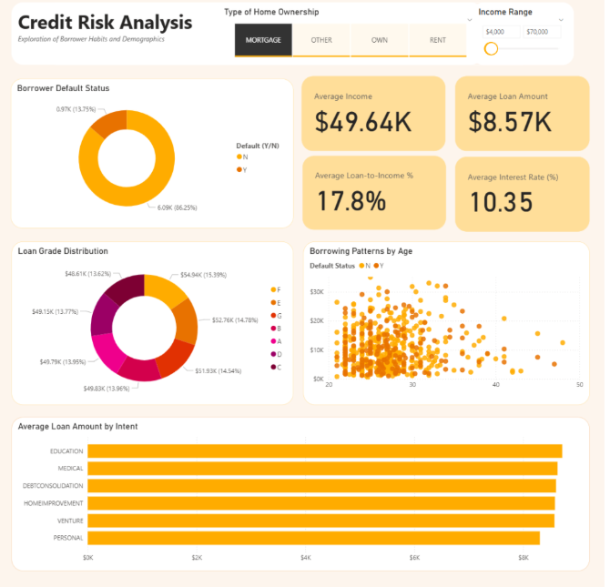

Subscription Churn Prediction | May 2026
Intro
Visualization

Design Report
The story this dashboard reveals how age, ownership type, and income play roles impact borrower habits and and loan trends. For instance, based on the screenshot above, it showcases how education and medical loans appear to be the most sought after by borrowers using mortgage, and that borrowers under 30 years of age in this group tend to be more prone to defaults. By visualizing these patterns, financial institutions, credit analysts, lenders can better understand borrower trends and detect the chances of default risks. This is vital in order for risk managers and marketing times to tailor their loan products and marketing approaches to target particular demographics more effectively.
The story this dashboard reveals how age, ownership type, and income play roles impact borrower habits and and loan trends. For instance, based on the screenshot above, it showcases how education and medical loans appear to be the most sought after by borrowers using mortgage, and that borrowers under 30 years of age in this group tend to be more prone to defaults. By visualizing these patterns, financial institutions, credit analysts, lenders can better understand borrower trends and detect the chances of default risks. This is vital in order for risk managers and marketing times to tailor their loan products and marketing approaches to target particular demographics more effectively.
Results
Overall, putting more emphasis on aesthetics this time around worked very well, with my main challenge being balancing an abundance of information with simplicity. If I had more time, I would try to find a way to make the Income Range slicer a list of grouped values rather than a slider with thousands of unique values to choose from, seeing how the most common income amounts are around ~$50k yet only making up barely 1/10 of the slicer range due to the abundance of outlier values.